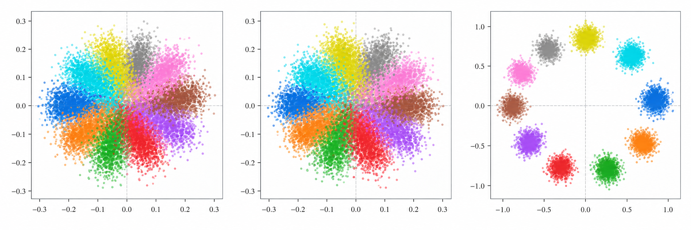

RESEARCH · 2026
Beyond the Readout: A Latent Numerical Frame Shared Across Modality and Operation
Investigating how multimodal language models represent numerical information across text, images, and arithmetic operations.
Explore Research View GitHub